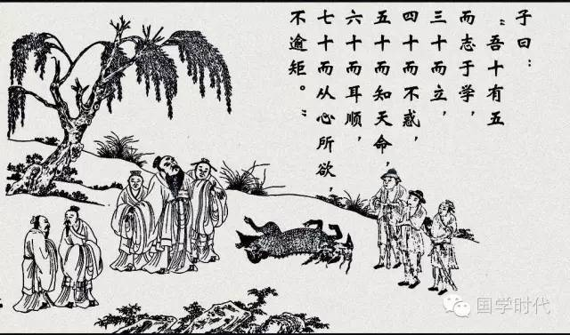
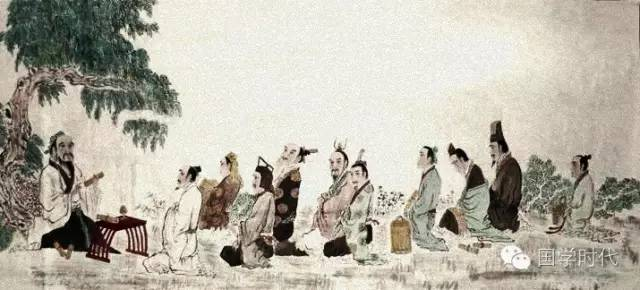
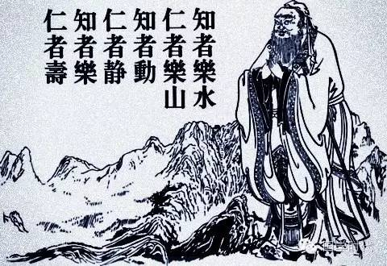
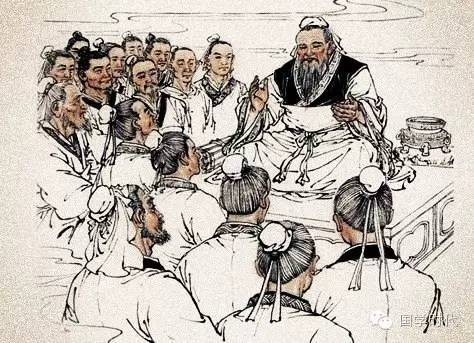

阅读 | 感悟《论语》中的“仁”
 3,402
3,402
一部《论语》，不过一万多字，其中“仁”字竟先后出现一百多次。“仁”是孔子关于人的道德修养和思想情趣的最根本的观点，是孔子思想体系的核心。把“仁”的思想施行于整个社会就是“仁政”，“仁政”是孔子一生追求的社会政治理想。孔子曾表示：采用我的主张，我就推行“仁政”；不采用我的主张，我就加强修养“仁”的品质。孔子“仁”的思想，集中体现在他对众弟子所请教的“仁”的回答上。孔子论“仁”，有多重涵义的表述，既精炼又富有针对性，可以说是从不同角度、不同层次对“仁”的学说的精当阐发。

颜回问孔子什么是“仁”。孔子说：”克制自己，按照礼的要求去做就是仁了。只要这样做了，天下的人都会赞许你。实行在于自己，难道还在于别人吗？”（颜渊问仁。子曰：“克己复礼为仁。一日克己复礼，天下归仁焉。为仁由己，而由乎哉？”——《论语·颜渊》）孔子在这里仅用“克己复礼”四个字，就极有针对性地阐述了“仁”在个人内在素质与外部素养方面的高深要求。颜回是孔子至为器重的弟子，曾被孔子赞扬说：“其心三月不违仁”，已具有“仁者”的基本内在素质。所以，孔子回答颜回请教“仁”的问题时，着重谈了“礼”的要求。在孔子看来，“仁者”必须以遵循“礼”为出发点，以重建“礼”制社会为归宿，也就是说要“克己复礼”。他认为，只有通过“礼”的修养，才能更好地达到“仁”的理想。所以，孔子希望颜回能进一步修习礼仪，加强外部修养，成为一个完美的“仁”的实践者。

冉雍（字仲弓）问孔子什么是“仁”。孔子告诉他说：“出门办事就像接待贵宾一样郑重，役使百姓就像承办祭礼一样谨慎。自己不想承受的事务，不要强加给别人。在国内没有怨恨，在家里也没有怨恨。”（仲弓问仁。子曰：“出门如见大宾，使民如承大祭。己所不欲，勿施于人。在帮无怨，在家无怨。”——《论语·颜渊》）冉雍以德行著称，孔子对他很器重，认为他可以做一个优秀的地方长官。这里，孔子向他解释“仁”的问题，特别强调了“仁”在行政事务中的具体要求，为他在日后的从政生涯指明了道路。孔子在这里对“仁”的阐述，从几个不同的方面指出了“仁”的原则，毫无空谈泛论之嫌，句句扎实、恳切、凝练。尤其是“己所不欲，勿施于人”一句，已成为千古名句。
司马耕性格急躁，喜好言谈，他向孔子请教怎样做才算“仁”，孔子告诉他：“仁人说话谨慎”。司马耕对此有些不理解，也有几分不满意，追问道：“说话谨慎就可以说是仁了吗？”孔子紧接着反问他：“事情做起来难，说起来能不谨慎吗？”（司马牛问仁。子曰：“仁者，其言也‘言刃’。”曰：“其言也‘言刃’，斯谓之仁已乎？”子曰：“为之难，言之得无‘言刃’乎？”——《论语·颜渊》）孔子仅以“说话谨慎”回答了司马耕所请教的“仁”，抓住了“仁者”的言谈要则，也抓住了弟子的性格特色。

樊迟问仁，孔子回答得更简洁：“爱人。”（樊迟问仁，子曰：“爱人。”——《论语·颜渊》）意思是说，爱护别人便是仁爱的。“爱人”两字包含着极为丰富深刻的人道主义内容，意味着把他人当作人来爱，在某种程度上超出了阶级、等级和家族的界限，表现了对人格的尊重，这是孔子“仁”的学说的最核心的内容。接着，孔子又以“恭”、“敬”、“忠”三字回答了樊迟对“仁”的进一步询问，很有见地地指出：“居家应该谦逊有礼，办事应该严肃认真，对人应该忠诚坦荡。即使到了夷狄地区，也不能放弃这种追求。”（樊迟问仁。子曰：“居处恭，执事敬，与人忠，虽之夷狄，不可弃也。”——《论语·子路》）孔子在这里对“仁”阐述得更周密、更具体，具有很强的诱导性。
子贡问如何实行仁德，孔子作了一个譬喻告诉他：“工匠要做好工作，一定要先磨快工具。居住在这个国家，就要事奉大夫中的贤人，并和士中的贤人做朋友。”（子贡问为仁。子曰：“工欲善其事，必先利其器。居是邦也，事其大夫之贤者，友其士之仁者。”——《论语·卫灵公》）孔子特别强调了要达到“仁”的高度，首先应做好身边的事，打好基础。结合子贡自身的情况来说，就是要在外交活动中首先选准交往对象，然后再以“仁”的思想对他们加以引导，这样就差不多近于“仁”了。

子张问孔子什么是仁。孔子概括为五个字：恭、宽、信、敏、惠。孔子认为能做到这五点就是仁爱了。孔子还进一步解释说：“恭就是庄重，庄重就不致遭到侮辱；宽就是宽厚，宽厚就能得到众人的拥戴；信就是信诚，信诚就能得到别人的任用；敏就是勤敏，勤敏就能取得成功；惠就是慈惠，慈惠就能够很好地使用他人。”（子张问仁。孔子曰：“能行五者于天下，为仁矣。”请问之。曰：“恭、宽、信、敏、惠。恭则不侮，宽则得众，信则人任焉，敏则有功，惠则足以使人。”——《论语·阳货》） 这些话非常恰切地体现了孔子期望通过理想人格的实现来推行“仁”的理想、构建“仁”的社会的心情。同时，“恭、宽、信、敏、惠”这五种品德，也正是针对子张的言论自负、见解偏激的不足而提出的。孔子勉励他要严于律己、宽以待人，靠自身的不懈努力，最终达到“仁”的标准。
品读《论语》，领悟孔子对“仁”的阐述，使自己既得到了一种理趣充盈的愉悦，也在思想上受到触动。
来源：梁文俊 国学时代